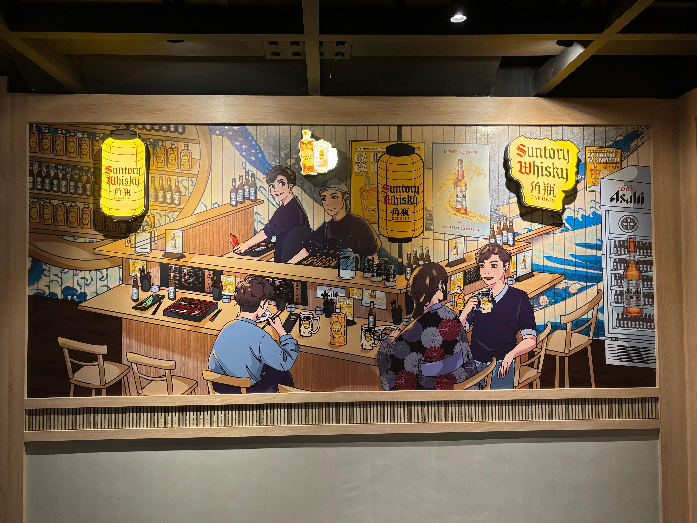

SAS had a chance to provide branding for Suntory & Asahi at Plaza Senayan's Yashinoki Yokocho. I created the illustration digitally to be printed and installed there. The mural depicts a lively Japanese bar scene featuring Suntory Whisky and Asahi branding, designed to immerse guests in an authentic izakaya atmosphere.

